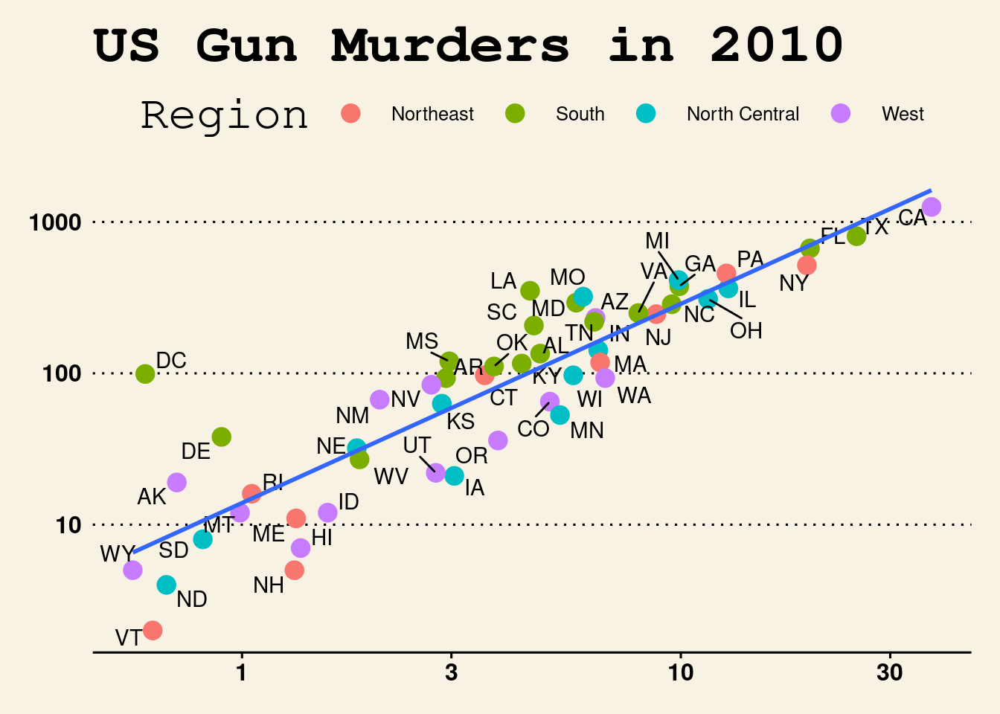

Code
# loading packages
library(tidyverse)
library(knitr)
library(ggthemes)
library(ggrepel)
library(dslabs)The Cox Proportional Hazards (CPH) model is a method used for performing survival analyses, namely in the medical field. It is used to relate several risk factors simultaneously against survival time and is widely considered to be one of the most popular methods in survival analyses. One of the key reasons why it is popular in survival analysis is due to its ability to handle censored time-to-event data (Fisher, L. D., & Lin D. Y. (1999)). “Censored” in this case would mean that some observed units were recorded for various lengths of time, but the event of interest did not occur during those studies. With this, Sir David Cox, the inventor of the model, considered such predictors and covariates when creating the Cox method. The risks, or “hazards,” were thought of as proportional to the probability of an event occurring at any particular time. Some of the risk factors used in its analyses include covariates – independent variables that can influence the outcome of an event but are not of direct interest in a study - such as treatment, age, gender, height, and so on. Another key factor in the CPH’s popularity in survival analysis is its semiparametric nature (Kleinbaum, D. G., & Klein, M. (2011)). The composition of the model is as follows:
\[ Add formula here \]
Where H_0 (t) is considered to be the baseline hazard function of the model. If in the event all other variables X are equal to zero, the formula reduces to H_0 (t) ; hence, it is the baseline hazard function. It is due to the hazard function being unspecified that the CPH model can be considered semiparametric. In other words, it is semiparametric because there is no assumption about the distribution of survival times, but rather assumes that the effects of different variables that affect survival are constant over time, hence the composition of its formula (Samar Abd ElHafeez, Graziella D’Arrigo, Daniela Leonardis, Maria Fusaro, Giovanni Tripepi, Stefanos Roumeliotis (2021)). Where parametric models have completely specified functional forms, the unspecified nature of the baseline hazard function allows the CPH model to be naturally more flexible. Another reason for its popularity is that even with an unspecified hazard function, the CPH model is robust, being able to obtain favorable results such as good estimates of regression coefficients, hazard ratios of interest, and adjusted survival curves (Kleinbaum, D. G., & Klein, M. (2011)). As a robust model, the CPH method can obtain results comparable to those of a parametric model. While parametric methods are still preferred over the CPH models in cases where the correct method is clearly indicated, the CPH model demonstrates its versatility by being both semiparametric in nature as well as attaining comparable results to its parametric counterparts.
The Cox PH model proposed in 1972 allows the estimation of regression coefficients of a hazard function without specifying the baseline hazard (Cox) The hazard function is the instantaneous risk of failure at time (t). The hazard function for other survival distributions such as Weibull take the form below:
\[h_i(t)= exp(α+ Z_iβ) \]
where
\(h_i(t)\) is the hazard function with respect to time
α is a constant that represents baseline hazard when all Zs are zero
\(Z_i\) are the covariates measured for \(i\)-th individuals (\(Z_{1i}+, Z_{2i}, ..., Z_{pi}\)) is the unknown regression coefficients (Fox).
In contrast to Weibull, the Cox PH model leaves the baseline hazard unspecified (i.e. \(α=h_i(t)\) ), and this baseline function can fluctuate with respect time instead of remaining constant.
\[h_i(t)= h_0(t) exp(Z_iβ) \] where
\(h_i(t)\) is the hazard function with respect to time
\(h_0(t)\) is the unknown baseline hazard function which can fluctuate with respect to time (Cox).
To demonstrate the impact of differing variables on the hazard function, Cox (1972) used the example of one Z variable (p=1) with values 0 and 1. The corresponding hazard functions become \(h_0(t)\) and \(h_0(t)exp(β\)). This example can be extended to include more variables and used to calculate the hazard ratio for the two cases:
\[ {h_i(t) \over h_{i'}(t)} = {h_0(t)exp(\eta_i) \over h_0(t)exp(\eta_{i'})} = {exp(\eta_i) \over exp(\eta_{i'})} \]
Where
\(h_i(t) \over h_{i'}(t)\) is the hazard ratio (HR) and is assumed to be constant with respect to time (Stensrud)(Fox)
\(\eta_i\) is corresponding linear predictors of \(i\)
\(\eta_{i'}\) is corresponding linear predictors of \(i'\)
The benefit of the Cox PH model is that the baseline hazard function can fluctuate with time instead of being constant or multiplicative. Another benefit is that the regression coefficients can be estimated without knowing the baseline hazard using the partial likelihood method as proposed by Cox (1972). Although the baseline hazard function can fluctuate, the Cox PH model assumes that the hazard ratio (HR) is constant. If the constant HR assumption is broken, one solution is to include an interaction between the covariate and time into the Cox model which is called time-dependent covariates (Fox) . Time dependent covariates are variables that vary with respect to time. Time dependent covariates can be modeled in the Cox by replacing \(Z_i\) with \(Z_i(t)\) which indicates that \(Z_i\) varies with respect to time.
\[h_i(t)= h_0(t) exp(Z_i(t)β) \]
where
\(h_i(t)\) is the hazard function with respect
\(Z_i(t)\) are the covariates that may be time-fixed or time-dependent (Hendry) is the unknown regression coefficients.
The hazard ratio (HR) then becomes the following:
\[ {h_0(t)exp(Z_i(t)β) \over h_0(t)exp(Z_j(t)β)} = {exp(Z_i(t)β) \over exp(Z_j(t)β)} \]
This allows the use of Cox PH for non-constant HR if the covariate is time-dependent. In general, the log hazard and covariates are assumed to be linear in the Cox PH model (Fox). The Cox model also assumes that the failure time of an individual is independent of the other individuals. This means that if one participant in a study dies that no other participants are affected. The Cox PH also assumes that censored individuals have a failure time that exceeds the censoring time (Cox). For example, a participant is still alive at the end of the study and is right-censored. The assumptions of proportional HR, independent individuals and right-censoring also applies to other exponential survival distributions (Fox) (Hendry). A key downside of Cox PH is that the survival function cannot be calculated since the baseline hazard is unknown. This hinders clinicians in determining the net benefit of treatments (McLernon).
The Cox Proportional Hazard model is used for modeling survival data and identifying relationships between predictors and survival times, and is commonly used in the medical research field but has also been applied in fields like finance and the social sciences. (Hendry) In medical research it is used to identify factors that influence patient outcomes, e.g. death or other health status. For example, Thiruvengadam et al. (2020) used the Cox model to analyze the factors that determine the length of stay for COVID-19 patients, using different demographic and health information to find connections to the length of stay or even death of patients. (Thiruvengadam) Other medical research often mirrors this structure and the model has also been applied in the context of clinical trials. For example, researchers used the model to determine treatment risks and treatment effectiveness for those in a systolic blood pressure intervention trial, finding a 25% lower hazard rate for those receiving intensive treatment. (Stensrud) The Cox proportional hazard model excels at modeling this type of scenario, using survival data that can be censored, i.e. as in the case where patients have died or left the study. Although commonly used for medical research, the application is straightforward in other fields with some research looking at the duration of events like marriages, recidivism, and bank failures. For example, researchers examining the factors leading to bank failure used the 2008 recession as a case study to determine and predict what factors, e.g. asset ratios and loan amounts, are indicators of failure. (COX/KIMMEL/WANG) The model has some limitations especially when not including time dependent structure in the model. In that case, the model assumes the hazard ratio is the same across the time sample, which is often not the case in medical research. This shortcoming is identified in Stensrud (2020), which highlights how treatment effects may not be constant over a whole sample and in some cases may have no effect for months and then a drastic effect after some time. This has led to the use of models which can include time dependent variables.
We decided to use a dataset named VA: https://vincentarelbundock.github.io/Rdatasets/doc/MASS/VA.html
The reason for this is because we believe the dataset fulfills the criteria necessary to conduct a survival analysis - in this case, studying a veteran’s probability of survival from lung cancer. It contains relevant covariates in a standard Cox model, such as age, treatment, survival time, and so on.
A study was conducted to determine how… NEED TO UPDATE FOR OUR MODEL AND ANALYSIS
# loading packages
library(tidyverse)
library(knitr)
library(ggthemes)
library(ggrepel)
library(dslabs)# Load Data
kable(head(murders))| state | abb | region | population | total |
|---|---|---|---|---|
| Alabama | AL | South | 4779736 | 135 |
| Alaska | AK | West | 710231 | 19 |
| Arizona | AZ | West | 6392017 | 232 |
| Arkansas | AR | South | 2915918 | 93 |
| California | CA | West | 37253956 | 1257 |
| Colorado | CO | West | 5029196 | 65 |
ggplot1 = murders %>% ggplot(mapping = aes(x=population/10^6, y=total))
ggplot1 + geom_point(aes(col=region), size = 4) +
geom_text_repel(aes(label=abb)) +
scale_x_log10() +
scale_y_log10() +
geom_smooth(formula = "y~x", method=lm,se = F)+
xlab("Populations in millions (log10 scale)") +
ylab("Total number of murders (log10 scale)") +
ggtitle("US Gun Murders in 2010") +
scale_color_discrete(name = "Region")+
theme_wsj()